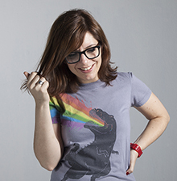

Casa Veggie
Web site con recetas vegetarianas creado solo por diversión y para aprender.
Diseño gráfico y front-end.


Carrot
Carrot es una empresa de diseño e impresión digital ubicada en Colonia del Sacramento.
Diseño de front-end.

Doña Inés
Sitio no-oficial diseñado para Doña Inés, una cafetería de Montevideo.
Diseño gráfico y front-end.
Ennis Bar
Sitio diseñado para Ennis, bar irlandés de Montevideo
Diseño y front-end usando Bootstrap.
Sobre mi
¡Hola! Soy Rosina, diseñadora gráfica y maquetadora web, vivo en Montevideo, Uruguay.
Las herramientas que uso son:
- HTML5 + CSS3
- Media queries
- Twitter Boostrap
- SEO básico a través de markup semántico
- Validación W3C
- Sublime2
- GIT (básico)
- Adobe Illustrator
- Adobe Photoshop
- Adobe Flash
- Corel Draw
- Gimp
¡Gracias por leer hasta aquí! Actualmente estoy disponible para nuevos proyectos, a continuación podés encontrar mis datos de contacto.